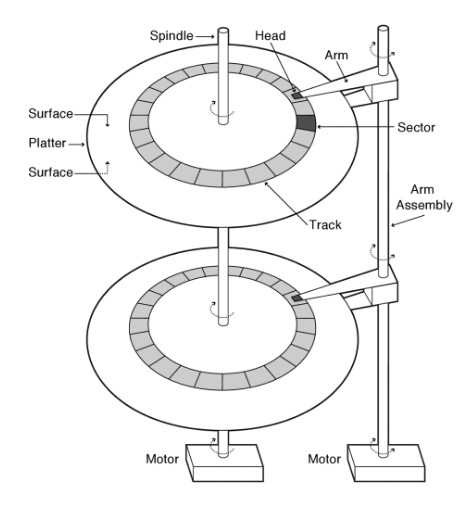
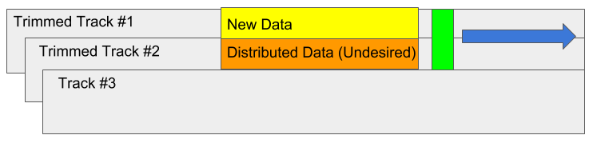
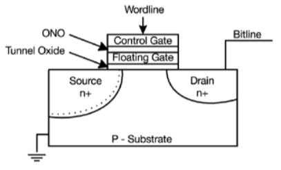

Input/Output
Table of Contents
Without I/O, computers are useless. But, we have thousands of devices, each slightly different: how can we standardize access to these devices? Devices are also unreliable and inconsistent.
I/O devices you recognize are supported by I/O controllers. Processors read and write from them using I/O registers.
What’s a bus? A common set of wires for communication among hardware devices, plus protocols for carrying out transactions.
PCI bus: PCI started as a parallel bus: for a 32-bit system, it had 32 address wires, 32 data wires, and power lines. PCI Express (PCIe) however is no longer a parallel bus, but rather a collection of fast serial channels or “lanes.” Devices can use as many serial channels as they need to achieve a desired bandwidth.
CPU interacts with a controller. The Controller contains a set of registers that can be read and written, and may contain memory for request queues, etc. Processor can access these registers in two ways: port-mapped i/o (in, out instructions) and memory-mapped i/o (registers/memory appear in physical address space, use load and store instructions).
Operational parameters for i/o: Data granularity: byte vs block. Keyboard, mice, provide single byte at a time. Others like disks, networks, provide blocks at a time. Access pattern: sequential vs random. Some devices must be accessed sequentially. Others can be accessed “randomly” (e.g. disk, cd, etc.) Some devices require continuous monitoring, others generate interrupts when they need service. Transfer mechanism: programmed I/O or DMA.
Programmed I/O: each byte is transferred via processor in/out or load/store. Pro: simple hardware, easy to program. Con: consumes processor cycles proportional to data size.
Direct memory access: Give controller access to memory bus. Ask it to transfer data blcoks to/from memory directly.
I/O interrupt: The OS needs to know when the I/O device has completed on operation or if it has encountered an error. The device generates an interrupt whenever it needs service. Pro is that it handle unpredictable events well. Con: interrupts have relatively high overhead.
Alternative is polling: OS periodically checks a device specific status register. The pro is low overhead, but con is it may waste many cycles on polling if operations are infrequent or unpredictable.
Want standard interface to devices: Block devices: e.g. disk drives, tape drives, DVD-ROM, access blocks of data Character devices: e.g. keyboards, mice, serial ports Network devices: e.g. Ethernet, wireless, Bluetooth
Timing: blocking interface: “wait” non-blocking interface: “don’t wait” asynchronous interface: “tell me later”
1. Hard Disk Drives (HDD)
Hard disk drives (HDDs) are an example of magnetic memory storage. An arm is held above a platter to read it:

A platter has two faces, and on each face are rings of tracks. Each track is comprised of a set of sectors, and two arms that can rotate into the correct position to hover above a track. The platter can then spin to position the correct sector underneath the arms.
The unit of transfer here is the sector, which are traditionally 512 bytes large (or 4096 bytes on some recent units). Disk tracks are about 1 micron wide, with about 100k tracks on a typical 2.5 inch disk. Each sector is separated by unused guard regions to reduce likelihood of write corrupting adjacent sectors.
For the operating system, the unit of transfer is often a “block” instead, which is usually a group of sectors. The block is usually defined equivalent to how large a physical page in memory is.
1.1. Shingled Magnetic Recording
Shingled magnetic recording (SMR) is a technique used to overlap tracks in order to yield greater density of storage. Normally, conventional magnetic recording (CMR) is used, but with shingled recording, new tracks that are written overlap previously written tracks (similar to roof shingles). While this increases the density of data, it also makes writing to a track harder since it also overwrites adjacent tracks:

Thus, a write to an SMR drive may trigger a cascade of rewrites down the line.
1.2. Performance
Read/write data is a three-step process:
- Seek: the head is positioned over the proper track.
- Rotate: the platter rotates the desired sector underneath the head.
- Transfer: transfer a block of bits (sectors) under the head.
Thus, the total read/write time is a combination of these times plus your software and hardware controller times.
1.3. Disk Controller
Sector sparing: remap bad sectors transparently to spare sectors on the same surface Slip sparing: remap all sectors when there is a bad sector to preserve sequential behavior Track skewing: sector numbers offset from one track to the next to allow for disk head movement in sequential operations.
1.4. Disk Scheduling
Since disks can only service one request at a time, we have a number of options to schedule these requests:
- FIFO: first in first out
- SPTF/SSTF: shortest positioning time first/shortest seek time first — greedy algorithm, but can be susceptible to starvation.
- SCAN: implements an elevator algorithm — take the closest request in the direction of travel.
- C-SCAN: circular SCAN — only go in one direction, so as to not be biased towards pages in the middle.
2. Solid State Disks (SSD)
Solid state disks (SSDs) replace the rotating magnetic media with flash memory. Since flash memory has no moving parts, they are very lightweight; however, they are more expensive than magnetic media. One flash memory cell looks something like this:

There are two varieties: NAND, which is denser but must be read and written in blocks, and NOR, which is much less dense but fast to read and write.
This device is like a normal transistor, however it adds a floating gate which is separated by insulators in order to hold charge. We can then take advantage of electron tunneling by raising or lowering the wordline high enough to read/write the gate.
Data is read and written in page-sized chunks. Before writing to a page, data in the block must first be erased. The flash memory controller is responsible for controlling reads and writes to the flash chip. The SSD also maintains a flash translation layer (FTL) which is a layer of inderection between the operating system and the flash controller. The FTL gives us many features, such as copy-on-write and wear levelling.